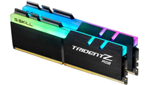

Pamięć RAM
Opis: Pamięć RAM to szybka pamięć operacyjna używana do tymczasowego przechowywania danych potrzebnych w danym momencie. Im więcej RAM-u, tym więcej programów może działać jednocześnie. Kluczowe cechy to pojemność (np. 8GB, 16GB, 32GB) oraz częstotliwość (MHz). RAM wpływa bezpośrednio na płynność działania komputera. Przykładowe modele to Kingston Fury Beast 16GB, Corsair Vengeance LPX czy G.Skill Trident Z.
